MySQL必知必会
第1章 了解SQL
数据库：保存有组织的数据的容器（通常是一个文件或一组文件）
表：某种特定类型数据的结构化清单，同一个表存储的是同一种数据类型，表名是唯一的
模式：关于数据库和表的布局及特性的信息
列：表中的一个字段。所有表都是由一个或多个列组成的
数据类型：所容许的数据的类型。每个表列都有相应的数据类型，限制该列中存储的数据
行：表中的一个记录。
主键：一列（或一组列），其值能够唯一区分表中每个行
主键值规则：
- 任意两行都不具有相同的主键值
- 每个行都必须具有一个主键值（主键列不允许NULL值）
主键的最好习惯：
- 不更新主键列中的值
- 不重用主键列的值
- 不在主键列中使用可能会更改的值
SQL：结构化查询语言（Structured Query Language）的缩写，是一种专门用来与数据库通信的语言。
第2章 MySQL简介
数据的所有存储、检索、管理和处理实际上是由数据库软件——DBMS（数据库管理系统）完成的。MySQL是一种DBMS，即它是一种数据库软件。
DBMS分为两类：
- 基于共享文件系统的DBMS（包括Microsoft Access等）
- 基于客户机-服务器的DBMS（包括MySQL、Microsoft SQL Server等）
- 服务器部分：负责所有数据的访问和处理
- 客户机部分：供用户使用
- mysql命令行：
mysql -u [username] -p -h [hostserver] -P [port]- 命令输入在
mysql>之后 - 命令用
;或\g结束，仅按Enter不执行命令 - 输入
help或\h获得帮助，获得特定命令的帮助：help select - 输入
quit或exit退出命令行程序
- 命令输入在
- MySQL Administrator（MySQL管理器）
- MySQL Query Browser
- mysql命令行：
第3章 使用MySQL
连接到MySQL，需要以下信息：
- 主机名：本地为localhost
- 端口：默认为3306
- 用户名
- 用户口令
最初连接到MySQL并未打开任何数据库，需要使用USE关键字打开数据库才能读取其中的数据。
数据库、表、列、用户、权限等的信息被存储在数据库和表中。内部的表一般不直接访问，而是用show命令来显示这些信息：
|
show COLUMNS from [表名]; ：显示表列，返回结果为每个字段一行，行中包含字段名、数据类型、是否允许NULL、键信息、默认值以及其它信息。
show status;：显示广泛的服务器状态信息
show create database;：显示创建特定数据库的MySQL语句
show create table;：显示创建特定表的MySQL语句
show grants;：显示授权用户（所有用户或特定用户）的安全权限
show errors;：显示服务器错误信息
show warnings;：显示服务器警告信息
第4章 检索数据
select [列名] from [表名];：检索单个列，不过滤、不排序
select [列名1,列名2] from [表名];：检索多个列
select * from [表名];：检索所有列，列的顺序一般是列在表定义中出现的顺序
distinct关键字：指示MySQL只返回不同的值，应用于所有列而不仅仅是前置它的列
select distinct [列名] from [表名];：检索列，返回行的结果唯一
limit关键字：限制结果
select [列名] from [表名] limit 5;：检索单个列，返回结果不多于5行
select [列名] from [表名] limit 3,5;：检索单个列，从行3开始，返回结果不多于5行
select [列名] from [表名] limit 5 offset 3;：检索单个列，从行3开始，返回结果不多于5行
行0：检索出来的第一行为行0而不是行1
有些情形需要完全限定名，使用完全限定的列名、表名：select [表名].[列名] from [数据库名].[表名];
第5章 排序检索数据
检索的数据默认不排序，数据一般以在底层表中出现的顺序显示。
数据顺序受MySQL重用回收存储空间的影响，如果不明确控制则不能依赖默认排序顺序。
关系数据库设计理论认为：如果不明确规定排序顺序，则不应该假定检索出来的数据的顺序有意义。
子句：SQL语句由子句构成，有些子句是必需的，有些是可选的。一个子句通常由一个关键字和所提供的数据组成。子句的例子：select语句的from子句。
按单个列排序：select [列名] from [表名] order by [任意列名];
按多个列排序：select [列名] from [表名] order by [列名1, 列名2];
- 优先按列名1进行排序
- 列名1排序相同的，根据列名2排序，依此类推
- 列名1排序唯一的，则忽略列名2
order by默认按升序（从A到Z），指定desc关键字使用降序（从Z到A）
- 单列排序：
select [列名] from [表名] order by [任意列名] desc; - 多列排序：
select [列名] from [表名] order by [列名1] desc, [列名2];- 首先按照列名1进行降序排序
- 同序情况下继续使用列名2进行升序排序
desc关键字只应用到直接位于其前面的列名，如果想使用多个列降序排序，则需要指定多个desc关键字
与desc相反的关键字是asc，升序是默认的，因而用的不多。
NOTE：排序顺序与大小写
在字典排序顺序中，MySQL以及大多数数据库管理系统的默认行为是：A被视为与a相同
使用order by和limit组合时，**order by子句必须位于from子句之后**，而limit子句则在order by子句之后。使用子句的次序不对将产生错误信息。
第6章 过滤数据
只检索所需数据需要指定搜索条件，又称过滤条件。
在select语句中，数据根据where子句中指定的搜索条件进行过滤，where子句在from子句后给出。
select [列名] from [表名] where [条件：列=值];
SQL过滤比应用过滤往往更高效。
同时使用order by和where子句时，应让order by位于where之后。
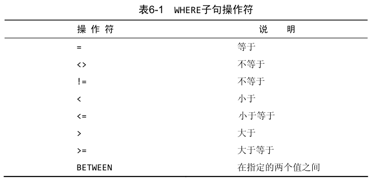
where子句中，单引号用来限定字符串，如果将值与串类型的列进行比较，则需要限定引号，用来与数值列进行比较的值不用引号。
范围值检查（包括指定的开始值和结束值）：select [列名] from [表名] where [条件：列名 between 5 and 10];
在一个列不包含值时，称其为包含空值NULL。
NULL：无值（no value），它与字段包含0、空字符串或仅仅包含空格不同
select语句有个特殊的where子句可以用来检查具有NULL值的列：is null子句
NULL与不匹配：在通过过滤条件选择出不具有特定值的行时，可能希望返回具有NULL的值，但是，因为未知具有特殊的含义，数据库不知道它们是否匹配，所在在匹配过滤或不匹配过滤时不返回它们。
因此，在过滤数据时，一定要验证返回数据中确实给出了被过滤列具有NULL的行。
第7章 过滤数据
组合where子句：select [列名] from [表名] where [条件：列=值] [操作符] [条件：列=值];
- 以
and子句的方式：检索满足所有给定条件的行 - 以
or子句的方式：检索满足任意给定条件的行
where可以包含任意数目的and和or操作符。任何时候使用具有and和or操作符的where子句，都应该使用圆括号明确地分组操作符，不要过分依赖默认计算次序。
in操作符：指定条件范围，合法值清单由逗号分隔，由圆括号括起来。
select [列名] from [表名] where [条件：列名 in (值1, 值2)];
等价于
select [列名] from [表名] where [条件：列=值1] or [条件：列=值2];
in操作符的优点：
- 使用长的合法清单时，
in语法更清晰且直观 - 使用
in时，计算的次序更容易管理 -
in操作符一般比or操作符清单执行更快 - 最大的优点：
in可以包含其它select语句，可以动态地建立where子句
not操作符：否定它之后所跟的任何条件
select [列名] from [表名] where [条件：列名 not in (值1, 值2)];
MySQL支持使用
not对in、between和exists子句取反，这与多数其它DBMS允许使用not对各种条件取反有很大的差别
第8章 用通配符进行过滤
通配符：用来匹配值的一部分的特殊字符，where子句中有特殊含义的字符
通配模式：由字面值、通配符或两者组合构成的搜索条件
like操作符：指示MySQL该操作符后面跟的搜索模式利用通配符匹配而不是直接相等匹配进行比较。
select [列名] from [表名] where [条件：列 like 通配模式];
百分号通配符%：表示任何字符出现任意次数。根据MySQL的配置方式，搜索可以是区分大小写的。
- 尾空格可能干扰通配符匹配，可以在搜索模式末尾加一个
%，或使用函数去掉首尾空格。 -
%不能匹配用值NULL的行
下划线通配符_：匹配单个字符
使用通配符的技巧：
- 不要过渡使用通配符，其它操作符能达成的效果尽量使用其它操作符
- 除非绝对有必要，否则不要在搜索模式的开始处使用通配符，这样搜索起来是最慢的
- 仔细注意通配符的位置
第9章 用正则表达式进行搜索
正则表达式是用来匹配文本的特殊的串。
where子句允许指定正则表达式过滤select检索出的数据。
select [列名] from [表名] where [条件：列 regexp 正则表达式];
regexp关键字：告诉MySQL该操作符后面跟的东西作为正则表达式处理。和like教像。
-
like匹配整个列值 -
regexp在列值内进行匹配
MySQL中的正则表达式匹配不区分大小写，为了区分大小写可以使用binary关键字。
select [列名] from [表名] where [条件：列 regexp binary 正则表达式];
.：匹配任意一个字符|：或匹配[abc]：匹配abc三个字符中的任意一个- 可替换成或匹配
[^abc]：匹配除这些字符外的任何东西[0-9]：范围匹配，相当于[0123456789]\\前导：匹配特殊字符\\.：查找.\\-：查找-\\\：匹配\引用元字符：
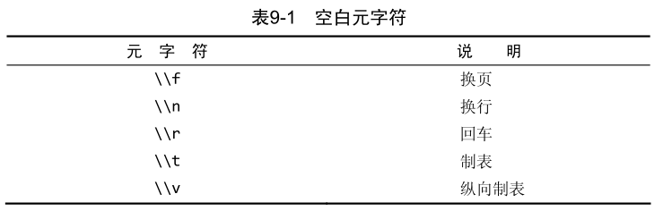
MySQL的正则表达式使用双斜杠转义特殊字符，原因是：MySQL自己解释一个，正则表达式库解释一个
匹配字符类：
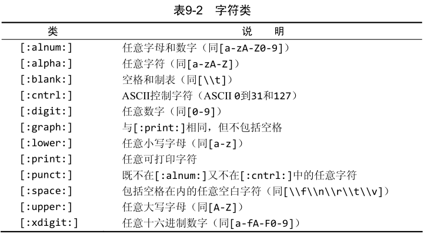
匹配多个实例：
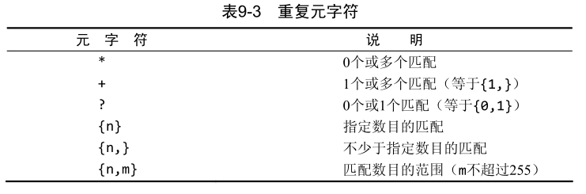
定位符：
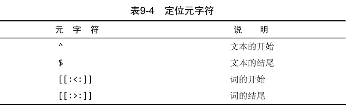
^的双重用途：
- 集合中
[]表示否定- 指示串开始处
通过
^开始每个表达式且用$结束每个表达式，可以使regexp的作用和like一样
正则表达式测试：
- 可以不使用数据库表的情况下用
select来测试正则表达式，regexp检查总是返回0（没有匹配）或1（匹配） - 可以用文字串的
regexp来测试表达式，并试验它们：select 'hello' regexp '[0-9]';
第10章 创建计算字段
拼接：将值联结到一起构成单个值。MySQL的select语句中，可使用Concat()函数拼接两个列。
大多数DBMS使用
+或||来实现拼接，转换时需要注意。
MySQL支持的去除多余空格的函数：
-
RTrim()：去除值右边的所有空格 -
LTrim()：去除值左边的所有空格 -
Trim()：去除值两边的所有空格
使用别名：拼接后得到的新列实际上没有名字，它只是一个值。为了解决这个问题，MySQL支持列别名（一个字段或值的替换名）。别名关键字as。别名有时也称导出列。
select ConCat([列名], [列名]) as [别名] from [表名]
别名的其它用途：
- 在实际的表列名包含不符合规定的字符（如空格）时重新命名它
- 在原来的名字含混或容易误解时扩充它
MySQL支持基本的算术操作符，圆括号可以用来区分优先顺序：
select [列名][算术操作符][列名] as [别名] from [表名]
测试计算：
select可以不从表中检索数据，省略from子句以便简单地访问和处理表达式-
select 3*2：返回6 -
select Trim(' abc ')：返回abc -
select Now()：返回当前时间
-
第11章 使用数据处理函数
SQL支持利用函数来处理数据。使用函数的SQL语句的可移植性会降低。
大多数SQL实现支持以下类型的函数：
- 处理文本的文本函数
- 对数值数据进行算术操作的数值函数
- 处理日期和时间值并从这些值中提前特定承父的日期和时间函数
- 返回DBMS正使用的特殊信息（如返回用户登录信息，检查版本细节）的系统函数
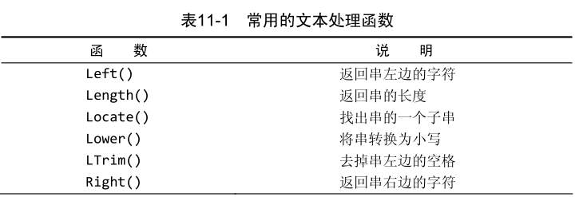
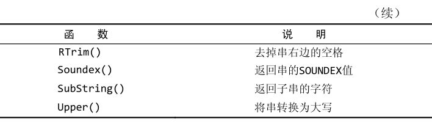
Soundex()是一个将任何文本串转换为描述其语音表示的字母数字模式的算法，可用于读音正确但输入错误的情况。
日期和时间采用相应的数据类型和特殊的格式存储，以便能快速和有效地排序或过滤，并且节省物理存储空间。
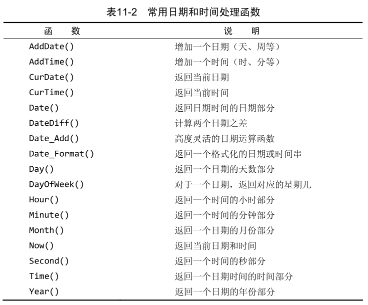
MySQL首选的日期格式是yyyy-mm-dd，因为它排除了多义性。
如果需要使用的只是日期，则使用Date()是一个好习惯。
数值处理函数在主要DBMS的函数中，数值函数是最一致最统一的函数，主要用于代数、三角或几何运算。
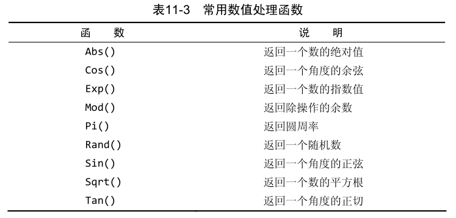
第12章 汇总数据
聚集函数：运行在组上，计算和返回单个值的函数。
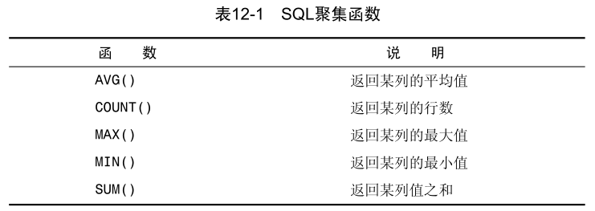
AVG()函数：
- 只用于单个列，可以使用多个
AVG()函数 -
AVG()函数忽略列值为NULL的行
COUNT()函数：
-
COUNT(*)：对表中行的数目进行计数，不管表列中包含的是空值（NULL）还是非空值 -
COUNT(column)：对特定列中具有值的行进行计数，忽略NULL值
MAX()函数：
- 一般用于数值或日期值
- 当用于文本数据时，如果数据按相应的列排序，则函数返回最后一行
- 忽略列值为NULL的行
MIN()函数：
- 一般用于数值或日期值
- 当用于文本数据时，如果数据按相应的列排序，则函数返回最前面的行
- 忽略列值为NULL的行
SUM()函数：
- 忽略列值为NULL的行
聚集函数：
- 利用标准的算术操作符，所有聚集函数都可用来执行多个列上的计数
- 对所有的行执行计算，指定
ALL参数 - 只包含不同的值，指定
distinct参数-
distinct用于count()时，必须指定列名
-
- 不给任何参数，则默认为
ALL
在为某个聚集函数的结果指定别名时，不应该使用表中实际的别名，语法上可以但并不推荐，使用唯一的名字会使SQL易于理解和使用。
第13章 分组函数
创建分组：select语句的group by子句。
如果使用了分组和聚集，则先分组，然后对每个组进行聚集。
group by子句的一些重要规定：
-
group by子句可以包含任意数目的列。这使得可以对分组进行嵌套，为数据分组提供更细致的控制 - 如果在
group by子句中嵌套了分组，数据将在最后规定的分组上进行汇总 -
group by子句中列出的每个列都必须是检索列或有效的表达式（但不能是聚集函数）。如果在select中使用了表达式，则必须在group by子句中指定相同的表达式。不能使用别名 - 除聚集计算语句外，
select语句中的每个列都必须在group by子句中给出 - 如果分组列中具有NULL值，则NULL将作为一个分组返回。如果列中有多行NULL值，它们将分为一组
-
group by子句必须出现在where子句之后，order by子句之前
with rollup关键字：可以得到每个分组以及每个分组汇总级别的值
过滤关键字：
-
where关键字：过滤行 -
having关键字：过滤分组
where关键字和having关键字句法相同，其差别在于：
-
where在数据分组前进行过滤，where过滤掉的行不包括在分组中，可能影响分组过滤 -
having在数据分组后进行过滤
group by和order by经常完成相同的工作，但还是存在很大差别的：
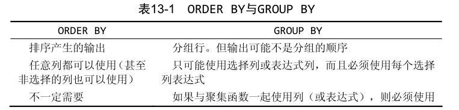
SQL规范并没有要求用group by分组的数据以分组顺序输出。
要保证数据正确排序，则必须使用order by子句。
select语句中子句的顺序：
-
select：必须使用 -
from：仅在从表中选择数据时使用 -
where：非必须 -
group by：仅在按组计算聚集时使用 -
having：非必须 -
order by：非必须 -
limit：非必须
第14章 使用子查询
任何SQL语句都是查询，但查询这个术语一般指select语句。
SQL允许创建子查询，即嵌套在其它查询中的查询。
在select语句中，子查询总是从内向外处理。子查询的嵌套数目没有限制，但实际使用中由于性能的限制，不能嵌套太多子查询。
在where子句中使用子查询，应该保证select语句具有与where子句中相同数目的列。
子查询一般与in操作符结合使用，但也可以用于测试等于（=）、不等于（<>）等。
相关子查询：涉及外部查询的子查询。
相关子查询的where子句使用完全限定列名。
子查询使用方法：由内而外创建子查询，确认子查询正确后再嵌入查询，然后再测试它。如此反复。
第15章 联结表
SQL最强大的功能之一就是能在数据检索查询的执行中联结（join）表。联结是利用SQL的select能执行的最重要的操作。
外键：某个表中的一列，包含另一个表的主键值，定义了两个表之间的关系。
可伸缩性：能够适应不断增加的工作量而不失败。
分解数据为多个表能更有效地存储，更方便地处理，并且具有更大的可伸缩性。
数据存储在多个表中，要用单条select语句检索出数据则要使用联结。
联结是一种机制，用来在一条select语句中关联表，存在于查询的执行过程中。
在使用关系表时，保证插入数据的合法性非常重要，即维护引用完整性，它是通过在表的定义中指定主键和外键来实现的。
联结的创建非常简单，规定要联结的所有表以及它们如何关联即可。
在引用的列可能出现二义性时，必须使用完全限定列名（用一个点分隔的表名和列名）。如果引用一个没有用表名限制的具有二义性的列名，MySQL将返回错误。
数据库表的定义中不存在指示MySQL如何对表进行联结的东西，联结是在select运行中构造的。联结两个表时，实际上是将第一个表的每一行与第二个表的每一行配对，使用where子句作为过滤条件，使结果只包含匹配联结条件的行。
笛卡儿积：由没有联结条件的表关系返回的结果为笛卡尔积。检索出的行数将是第一个表中的行数乘以第二个表中的行数。
等值联结：又称内部联结，基于两个表之间的相等测试。
等值联结的写法：
where子句：使用简单，select [列名] from [表1], [表2] where [表1].[列名] = [表2].[列名]inner join语法：ANSI SQL规范首选，使联结条件清晰，有时能影响性能，select [列名] from [表1] inner join [表2] where [表1].[列名] = [表2].[列名]
SQL对一条select语句中可以联结的表的数目没有限制，但联结的表越多，性能下降越厉害，应该避免联结不必要的表。
子查询并不总是执行复杂select操作的最有效的方法，有时候联结也可以做到相同查询。
执行任一给定的SQL操作，一般存在不止一种方法。
第16章 创建高级联结
别名除了用于列名和计算字段外，SQL还允许给表名起别名，理由有两：
- 缩短SQL语句
- 允许在单条
select语句中多次使用相同的表
表别名不返回客户机，只在查询中使用
自联结：通常作为外部语句用来替代从相同表中检索数据时使用的子查询语句。
自然联结：是一种特殊的等值连接，它要求两个关系进行比较的分量必须是相同的属性组，并且在结果集中将重复属性列去掉。
自然联结是通过对表使用通配符select [表1]。*，对其它所有表使用明确的子集[表2].[非重复列] [表3].[非重复列]来完成的。
外部联结：
- 左联结：
left outer join，以from子句左边表为基准，保留其所有行 - 右联结：
right outer join，以from子句右边表为基准，保留其所有行
MySQL不支持简化字符
*=和=*的使用
聚集函数可以同联结一起使用。
第17章 组合查询
MySQL允许执行多个查询（多条select语句），并将结果作为单个查询结果集返回。
组合查询通常称为并（union）或复合查询，两种情况需要使用组合查询：
- 在单个查询中从不同的表返回类似结构的数据
- 对单个表执行多个查询，按单个查询返回数据
任何具有多个where子句的select语句都可以作为一个组合查询给出。
union关键字：放在在每条select语句之间，构成组合查询
union规则：
- 必须由两条或两条以上的
select语句组成，语句之间用union分隔 -
union中每个查询必须包含相同的列、表达式或聚集函数，不过各个列不需要以相同的次序列出 - 列数据类型必须兼容：类型不必完全相同，但必须是DBMS可以隐含地转换的类型，比如不同的数值类型或不同的日期类型
在使用union时，重复的行被自动取消，这是默认行为。如果要返回所有匹配的行，可以使用union all。
union几乎总是完成与多个where条件相同的工作，但如果需要每个条件的匹配行全部出现（包括重复行），则必须使用union all。
对组合查询结果排序时，只能使用一条order by子句，必须出现在最后一条select语句之后，排序所有select语句返回的所有结果。
第18章 全文本搜索
like和正则匹配的局限性：
- 性能：通配符和正则表达式通常要求MySQL尝试匹配表中所有行
- 明确控制：使用通配符和正则表达式，很难（且并不是总是能）明确控制匹配什么和不匹配什么
- 智能化结果：基于通配符和正则表达式的搜索提供了非常灵活的搜索，但都不能提供一种智能化的选择结果的方法
全文本搜索解决了这些限制，在使用全文本搜索时，MySQL不需要分别查看每个行，不需要分别分析和处理每个词。MySQL创建指定列中各词的一个索引，搜索可以针对这些词进行，这样可以快速有效地决定哪些词匹配等。
一般在创建表的时候启用全文本搜索：create table语句接受fulltext子句，该子句给出被索引列的一个逗号分隔的列表。
定义之后，MySQL自动维护该索引，增加、更新、删除行时索引会随之自动更新。
可以在创建表时指定fulltext，或者在稍后指定（这种情况下所有已有数据必须立即索引）。不要在导入数据时使用fulltext，应该先导入所有数据后再定义fulltext，有助于节省时间。
进行全文本搜索：
Match()：指定被搜索的列- 传递给
Match()的值必须与FULLTEXT()定义中的相同，如果指定多个列，则必须按照正确次序列出它们
- 传递给
-
Against()：指定要使用的搜索表达式
select [列名] from [表名] where Match([列名]) Against('表达式');
除非使用
binary方式，否则全文本搜索不区分大小写
全文本搜索返回的结果以匹配等级排序，匹配值靠前的等级比靠后的行的等级高：select [列1] Match(列1) Against('表达式') as rank from [表名]
如果指定多个搜索项，则包含多数匹配词的那些行的等级值比包含较少匹配词（或仅有一个匹配）的那些行的等级值高
查询扩展用来设法放宽所返回的全文本搜索结果的范围。
在使用查询扩展时，MySQL对数据和索引进行两遍扫描来完成搜索：
- 首先，进行一个基本的全文本搜索，找出匹配的所有行
- 接着，MySQL检查这些匹配行并从中选择有用的词
- 然后，MySQL使用原来的条件加上所有有用的词，再次进行全文本搜索
利用查询拓展，能找到可能相关的结果，即使它们并不精确包含所查找的词。
select [列名] from [表名] where Match([列名]) Against('表达式' with query expansion);
MySQL支持全文本搜索的另一种形式，称为布尔方式，以布尔方式，可以提供关于如下内容的细节：
- 要匹配的值
- 要排斥的值（包含排斥词的行不返回）
- 排列提示（指定某些词的等级更高）
- 表达式分组
- 另外一些内容
布尔方式不同于其它全文本搜索的地方在于，即使没有定义
fulltext索引也可以使用，但操作缓慢
select [列名] from [表名] where Match([列名]) Against('表达式' in boolean mode);
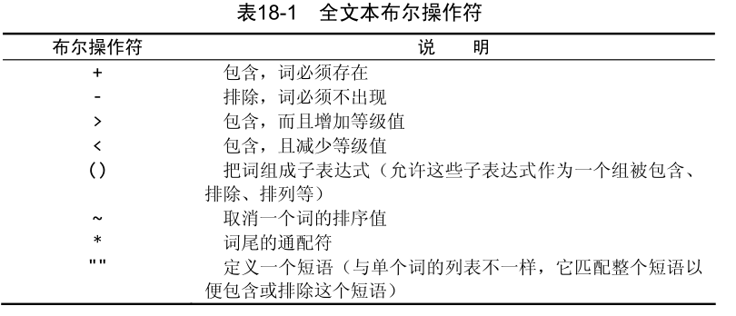
若两个词没有指定操作符，则搜索匹配包含两个词中至少一个。
排列而不排序：在布尔方式中，不按等级值降序排序返回的行
全文本搜索的使用说明：
- 在索引全文本数据时，短词被忽略且从索引中排斥。短词定义为那些具有3个或3个以下字符的词（如果需要，该数目可更改）
- MySQL带有一个内建的非用词（stopword）列表，这些词在索引全文本数据时总是被忽略。如果需要，可以覆盖这个列表
- MySQL规定（50%规则）：如果一个词出现在50%以上的行中，则将它作为一个非用词忽略，搜索这种词没什么用处（返回太多结果）。该规则不用于布尔方式。
- 如果表中的行数少于3行，则全文本搜索不返回结果，因为每个词或者不出现，或者至少出现在50%的行中
- 忽略词中的单引号
- 不具有词分隔符的语言不能恰当地返回全文本搜索结果（如日语和汉语）
- 仅在MyISAM数据库引擎中支持全文本搜索
第19章 插入数据
insert的几种使用方式：
- 插入完整的行
- 插入行的一部分
- 插入多行
- 插入某些查询的结果
insert into [表名](列名，逗号分隔) values(列值，逗号分隔，对应列名);
如果不提供列名，则必须给每个表列提供一个值。如果给出列名，则每个列出的列都必须给一个值。
如果表的定义允许，可以在insert操作中省略某些列的值，省略的列必须满足以下某个条件：
- 该列定义为允许NULL值
- 在表定义中给出默认值，这表示如果不提供值，将使用默认值
insert操作可能比较耗时，可能降低等待处理的select语句的性能。如果数据检索更重要，可以使用关键字low_priortiy降低insert语句的优先级：insert low_priority into
单条insert语句可以插入多组值，每组值用一对圆括号括起来。
MySQL用单条insert语句处理多个插入比用多条insert语句快。
插入检索出的数据：insert into [表名](列名，逗号分隔) select(列值，逗号分隔) from [表名] where [过滤条件];
第20章 更新和删除数据
更新（修改）表中的数据，使用update语句，可采用两种方式：
- 更新表中特定行
- 更新表中所有行
使用
update一定要注意不要省略where子句
update语句由三部分组成：
- 要更新的表
- 列名和它们的新值
- 确定要更新行的过滤条件
update [表名] set [列名]=[新值] where [过滤条件];
在更新多个列时，只需要使用单个set命令，每个“列=值”对之间用逗号分隔。
update语句中可以使用子查询，使得能用select语句检索出的数据更新列数据。
如果用update语句更新多行，并且在更新这些行时出现错误，则整个update操作将被取消。如果要忽略错误继续更新，可以使用ignore关键字：update ignore [表名]
为了从一个表中删除（去掉）数据，使用delete语句，可采用两种方式：
- 从表中删除特定的行
- 从表中删除所有行
使用
delete一定要注意不要省略where子句
delete from [表名] where [过滤条件];
delete不需要列名或通配符，删除的是整行而不是删除列。
为了删除指定的列，使用update语句。
delete语句从表中删除行，甚至是删除表中所有行，但是，delete不擅长表本身。
如果想从表中删除所有行，不要使用delete，可使用truncate table语句，它完成相同的工作但速度更快（实际是删除原来的表并重新创建一个表）
使用update或delete时应该遵循的习惯：
- 除非确实打算更新或删除每一行，否则绝对不要使用不带
where子句的update或delete语句 - 保证每个表都有主键，尽可能像
where子句那样使用它（可以指定各主键、多个值或值的范围） - 在对
update或delete语句使用where子句前，应该先用select进行测试，保证过滤结果正确 - 使用强制实施引用完整性的数据库，这样MySQL将不允许删除具有与其它表相关联的数据的行
mySQL没有撤销（undo）按钮！
第21章 创建和操纵表
使用create table创建表，必须给出以下信息：
- 新表的名字，在关键字
create table之后给出 - 表列的名字和定义，用逗号分隔
MySQL语句中忽略空格，语句可以在一个长行上输入，也可以分成许多行
在创建新表时，指定的表名必须不存在，否则将出错。为了防止意外覆盖已有的表，SQL要求手动删除表后才可以重建它。
如果仅想在一个表不存在时创建它，应该在表名后面给出if not exists，该检查只检查表名是否存在，并且仅在表名不存在时创建它，并不检查已有表的模式是否与打算创建的表模式相匹配。
每个表列在定义表时指定是NULL列，或者是NOT NULL列。NULL是默认设置，如果不指定NOT NULL，则认为指定的是NULL。
NULL是空值，‘’是空串，空串是一个有效的值。
主键值必须唯一，表中每个行必须具有唯一的主键值，主键必须是NOT NULL的：
- 单列主键：值必须唯一
- 多列主键：列组合值必须唯一
主键定义：primary key ([列1, 列2, ...])
主键可以在创建表时定义，或者在创建表之后定义
auto_increment关键字，列值自增，每个表只能有一个auto_increment列，而且它必须被索引（如令它成为主键）。
覆盖auto_increment：可以在insert语句中指定一个值，只要这个值是唯一的，则可以用该值替代自动生成的值，后续的增量将以该值为基准。
确定auto_increment值：可使用last_insert_id()函数获取这个值，使用：select last_insert_id()
如果在插入行是没有给出值，MySQL允许指定此时使用的默认值，默认值由create table语句的列定义中的default关键字指定：
create table test (id int not null, test int not null default 1)ENGINE=InnoDB;
与大多数DBMS不一样，MySQL不允许使用函数作为默认值，只支持常量
MySQL有一个具体管理和处理数据的内部引擎，MySQL与其它DBMS不一样，它具有多种引擎。
ENGINE=语句可以指定引擎，如果不指定则使用默认引擎（很可能是MyISAM）。
常见引擎：
-
InnoDB是一个可靠的事务处理引擎，不支持全文本搜索 -
MEMORY在功能等同于MyISAM，但由于数据存储在内存（不是磁盘）中，速度特别快（适合临时表） -
MyISAM是一个性能极高的引擎，支持全文本搜索，但不支持事务处理
引擎类型可以混用用来达到不同的目的，但外键不能跨引擎，外键用于强制实施引用完整性，即，使用一个引擎的表不能引用具有使用不同引擎的表的外键。
更新表定义，使用alter table语句，使用时需要给出必要信息：
- 在
alter table之后给出要更改的表名（该表必须存在，否则将出错） - 所做更改的列表
对单个表进行多个更改，可以使用单条alter table语句，每个更改用逗号分隔。
复杂的表结构更改一般需要手动删除过程，涉及以下步骤：
- 用新的列布局创建一个新表
- 使用
insert select语句从旧表复制数据到新表。如果有必要，可使用转换函数和计算字段 - 检验包含所需数据的新表
- 重命名旧表（如果确定，可以直接删除它）
- 用旧表原来的名字重命名新表
- 根据需要，重新创建触发器、存储过程、索引和外键
使用
alter table时应该小心，最好在改动前做一个完整的备份
删除（整个）表使用drop table语句，后跟表名。
使用rename table语句可以重命名一个表：rename table [旧表名] to [新表名]
可以同时对多个表进行重命名，使用逗号分隔。
第22章 使用视图
视图是虚拟的表，不包含标准任何数据，它包含的是一个SQL查询，是一个动作，使用时检索数据。
视图的作用：
- 重用SQL语句
- 简化复杂的SQL操纵
- 利用视图可以简化复杂的联结
- 利用视图可以过滤不想要的数据
- 利用视图可以简化计算字段
- 使用表的组成部分而不是整个表
- 保护数据。可以给用户授予表特定部分的访问权限而不是整个表的访问权限
- 更改数据格式和表示。视图可返回与底层表的表示和格式不同的数据
在视图创建之后，可以用使用表一样使用视图。
视图的规则和限制：
- 与表一样，视图必须唯一命名
- 对于可以创建的视图数目没有限制
- 为了创建视图，必须有足够的访问权限
- 视图可以嵌套
-
order by可以用在视图中，但如果从该视图检索数据的select语句中也有order by，则视图中的order by将被覆盖 - 视图不能索引，也不能有关联的触发器或默认值
- 视图可以和表一起使用
使用视图：
- 视图用
create view语句创建 - 使用
show create view viewname;来查看创建视图的语句 - 用
drop删除视图：drop view viewname; - 更新视图时，可以先用
drop再用create，也可以直接用create or replace view（存在则替换，不存在则创建）
如果从视图检索数据时使用了一条
where子句，则两组子句（一组在视图中，一组是传递给视图的）将自动组合。
视图是可更新的，更新一个视图将更新其基表，对视图增加或删除行，实际上是对其基表增加或删除行。
并非所有视图都是可更新的。如果MySQL不能正确地确定被更新的基数据，则不允许更新（包括插入和删除）。
如果视图定义中有以下操纵，则不能进行视图的更新：
- 分组（使用
group by和having） - 联结
- 子查询
- 并
- 聚集函数
-
distinct - 导出（计算）列
视图主要是用于数据检索，更新限制实际对视图并无多大影响。一般也应该只用视图进行检索而不用于更新。
第23章 使用存储过程
存储过程：为以后的使用而保存的一条或多条MySQL语句的集合。可视为批文件，但作用不仅限于批处理。
使用存储过程的理由：
- 通过把处理封装在容易使用的单元中，简化复杂的操作
- 保证了数据的完整性，不需要反复建立一系列处理步骤
- 简化对变动的管理，具有安全性
- 提高性能，存储过程比使用单独的SQL语句要快
- 存在一些只能用在单个请求中的MySQL元素和特性，存储过程可以使用它们来编写功能更强更灵活的代码
存储过程的一些缺陷：
- 一般来说，存储过程的编写比基本SQL语句复杂，编写存储过程需要更高的技能和更丰富的经验
- 创建存储过程的安全访问权限受限制。许多数据库管理员允许用户使用存储过程，但不允许用户创建存储过程
MySQL称存储过程的执行为调用，因此执行存储过程的语句为call：call [存储过程名](@开头的参数);
创建存储过程：
|
默认的MySQL语句分隔符为;。MySQL命令行实用程序也使用;作为语句分隔符。如果命令行实用程序要接受存储过程自身内的;字符，则它们最终不会成为存储过程的成分，这会使存储过程中的SQL出现句法错误。解决办法是临时更改命令行实用程序的语句分隔符：
|
除
/符号外，任何字符都可以用作语句分隔符。
删除存储过程：drop procedure [存储过程名];
仅当存在时删除存储过程：drop procedure if exists [存储过程名];
一般，存储过程并不显示结果，而是把结果返回给指定的变量。
变量：内存中一个特定的位置，用来临时存储数据。
MySQL的参数类型：
-
in：传递给存储过程 -
out：从存储过程传出 -
inout：对存储过程传入和传出
所有MySQL变量都必须以@开始
comment关键字：非必需，如果给出，将在show procedure status的结果中显示。
|
检查存储过程：
- 显示创建存储过程的
create语句show create procedure [存储过程名]; - 获得包括何时、由谁创建等详细信息的存储过程列表：
show procedure status;- 限制过程状态结果，可使用
like指定一个过滤模式：show procedure status link '模式值';
- 限制过程状态结果，可使用
第24章 使用游标
游标是一个存储在MySQL服务器上的数据库查询，它不是一条select语句，而是被该语句检索出来的结果集。
在存储了游标之后，应用程序可以根据需要滚动或浏览其中的数据。
不像大多数DBMS，MySQL游标只能在存储过程（或函数）里面使用。
使用游标的步骤：
- 使用游标前，必须声明（定义）它。这个过程没有检索数据，至少定义要使用的
select语句 - 声明之后，必须打开游标以供使用。这个过程用前面定义的
select语句把数据实际检索出来 - 对于填有数据的游标，根据需要取出（检索）各行
- 在结束游标使用时，必须关闭游标
创建游标：declare [游标名] cursor for [游标定义];
打开游标：open [游标名];
- 在处理
open语句时执行查询，存储检索出的数据以供浏览和滚动
关闭游标：close [游标名];
-
close是否游标使用的所有内部内存和资源 - 如果不明确关闭游标，MySQL将会在到达
end语句时自动关闭它
使用游标数据：fetch [游标名] into [变量名];
- 访问游标的每一行，并向前移动游标中的内部行指针，使下条
fetch语句检索下一行 -
fetch指定检索什么数据（所需的列），检索出来的数据存储在什么地方
|
- 该语句定义了一个
continue handler，在条件出现时被执行的代码 - 当
SQLSTATE '02000'（此即条件）出现时，set done=1-
SQLSTATE '02000'是一个未找到条件，当repeat由于没有更多行供循环而不能继续时出现
-
declare语句的次序：
- 局部变量
- 游标
- 句柄
不遵守此顺序将产生错误消息。
第25章 使用触发器
MySQL语句和存储过程都是在需要时被执行，而触发器在事件发生时自动执行。
触发器是MySQL响应以下任意语句而自动执行的一条MySQL语句：delete、insert、update
触发器用create tirgger语句创建，创建时需要给出的信息：
- 唯一的触发器名
- 触发器关联的表
- 触发器应该响应的活动（delete、insert或update）
- 触发器何时执行（处理之前或之后）
create trigger [触发器名] before/after [活动] on [表名] [触发器内容];
触发器只支持表，不支持视图（临时表也不支持）
每个表每个事件每次只允许一个触发器，因此，每个表最多支持6个触发器
- insert之前和之后
- update之前和之后
- delete之前和之后
单一触发器不能与多个事件或多个表关联。
触发器失败：
- 如果
before触发器失败，MySQL将不执行请求本身 - 如果
before触发器或语句本身失败，MySQL将不执行after触发器（如果有的话）
删除触发器：drop trigger [触发器名]
触发器不能更新，不能覆盖，要修改只能先删除再重新创建。
insert触发器：
- 在
insert触发器代码内，可引用一个名为NEW的虚拟表，访问被插入的行 - 在
before insert触发器中，NEW中的值也可以被更新（允许更改被插入的值） - 对
auto_increment列，NEW在insert执行之前包含0，在insert执行之后包含新的自动生成值
对
insert触发器和update触发器来说，通常，将before用于数据验证和净化，目的是保证插入表中的数据确实是需要的数据。
delete触发器：
- 在
delete触发器代码内，可以引用一个名为OLD的虚拟表，访问被删除的行 -
OLD在的值全都是只读的，不能更新
使用before delete触发器的优点：如果由于某种原因，触发器不能执行，delete本身将被抛弃。
触发器体可以使用begin和end语句标记，这样可以让触发器能容纳多条SQL语句。
update触发器：
- 在
update触发器代码中- 可以引用一个名为
OLD的虚拟表访问（update语句前）的值 - 可以引用一个名为
NEW的虚拟表访问新更新的值
- 可以引用一个名为
- 在
before update触发器中，NEW中的值可能也被更新（允许更改将要用于update语句中的值），可用来保证数据的一致性（大小写、格式等） -
OLD中的值全都是可读的，不能更新
MySQL的触发器不支持call语句，即不能从触发器内调用存储过程，需要将存储过程的代码复制到触发器内。
第26章 管理事务处理
并非所有引擎都支持事务处理
事务处理可以用来维护数据库的完整性，它保证成批的MySQL操作要么完全执行，要么完全不执行，保证事务的原子性。
事务：指一组SQL语句。
回退：指撤销指定SQL语句的过程
提交：指将为存储的SQL语句结果写入数据库表
保留点：指事务处理中设置的临时占位符，可以发布对它的回退（处理不同于回退整个事务）
管理事务处理的关键在于将SQL语句组分解成逻辑块，并明确规定数据何时应该回退，何时不应该回退。
标记事务的开始：start transaction
回退（撤销）MySQL语句：rollback，回退start transaction之后的所有语句
事务处理用来管理
insert、update和delete，不能回退select（也没有意义）。不能回退
create或drop操作，事务处理块中可以使用但回退不会被撤销
在事务处理块中，提交不会隐含地进行，需要使用commit;明确进行提交，commit仅在前面语句不出错时写出更改。
当
commit或rollback语句执行后，事务会自动关闭（将来的更改会隐含提交）
保留点用于部分回退，保留点的创建：savepoint [保留点名字]
回退到保留点：rollback to [保留点名字]
保留点在事务处理完成后自动释放，也可以用release savepoint明确地释放保留点
默认的MySQL行为是自动提交所有更改，即任何时候执行了一条MySQL语句，该语句实际上是针对表执行的，而且所做的更改立即生效。
为了指示MySQL不自动提交更改，需要使用：set autocommit=0
autocommit标志决定释放自动提交更改，不管有没有commit语句。值为0（假）指示不自动提交更改。
autocommit标志是针对每个连接而不是服务器的。
第27章 全球化和本地化
数据库表用来存储和检索数据。不同的语言和字符集需要以不同的方式存储和检索。
MySQL需要适应不同的字符集，适应不同的排序和检索数据的方法。
字符集为字母和符号的集合
编码为某个字符集成员的内部表示
校对为规定字符如何比较的指令
使用何种字符集和校对的决定在服务器、数据库和表级进行。
MySQL
- 查看所支持的字符集完整列表：
show character set; - 查看所支持校对的完整列表：
show collation; - 确定所用的字符集和校对：
-
show variables like 'character%' -
show variables like 'collation%'
-
通常系统管理在安装时定义一个默认的字符集和校对，此外，创建数据库时也可以指定默认的字符集和校对。
实际上，字符集很少是服务器范围（甚至是数据库范围）的设置，不同的表，甚至不同的列都可能需要不同的字符集，而且两种都可以在创建表时指定。
character set指定字符集。
collate指定校对。
使用与比创建表时不同的校对顺序排序特定的select语句，可以在select语句中声明。
collate可以order by、group by、having、聚集函数、别名等中使用。
如果绝对需要，串可以在字符集之间进行转换，使用Cast()或Convert()函数。
第28章 安全管理
MySQL服务器的安全基础是：用户应该对他们需要的数据具有适当的访问权，既不能多也不能少。
MySQL用户账号和信息存储在名为mysql的MySQL数据库中。一般不需要之间访问mysql数据库和表，但有时需要之间访问，如获得所有用户账号列表时：use mysql; select user from user;
创建用户账号：create user [用户名] identified by '口令';
重命名用户账号：rename user [old_name] to [new_name];
删除用户账号：drop user [user_name];
查看用户访问权限：show grants for [user_name];
-
USAGE表示根本没有权限 - 用户名定义为
user@host，不指定主机名则使用默认的主机名%
使用grant语句设置权限，需要以下信息：
- 要授予的权限
- 被授予访问权限的数据库或表
- 用户名
eg：grant select on crashcourse.* to bfotra;
撤销权限使用revoke，eg：revoke select on crashcourse.* from bfotra;
被撤销的权限如果不存在则出错。
grant和revoke可以在几个层次上空值访问权限：
- 整个服务器，使用
grant all和revoke all - 整个数据库，使用
on database.* - 特定的表，使用
on database.table - 特定的列
- 特定的存储过程
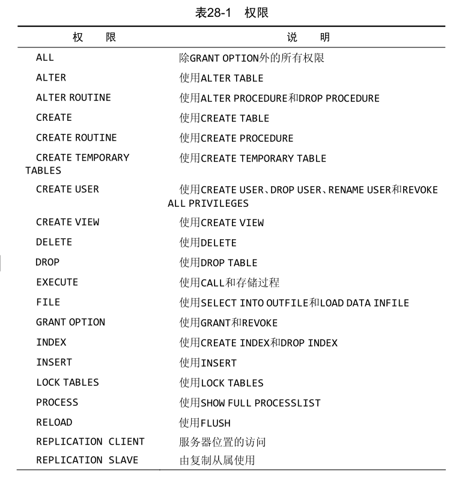
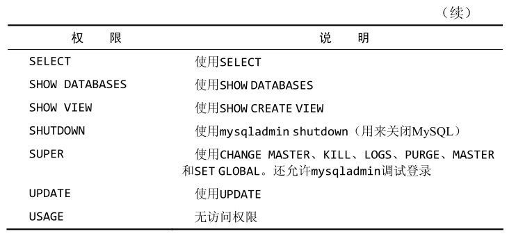
权限设置时，用户账号必须存在，但对所涉及的对象没有这个要求：
- 当某个数据库或表被删除时，相关访问权限仍然存在
- 如果将来重新创建该数据库或表，这些权限仍然起作用
各权限可以用逗号分隔，使用单条语句授权。
更改用户口令：set password for [user_name] = Password('new_password');
- 不指定用户名时，更新当前登录用户的口令
第29章 数据库的维护
MySQL数据库是基于磁盘的文件，普通的备份系统和例程就能备份MySQL的数据。但是，由于这些文件总是处于打开和使用状态，普通的文件副本备份不一定总是有效。
解决方案：
- 使用命令行程序mysqldump转储所有数据库内容到某个外部文件
- 使用命令行程序mysqlhotcopy从一个数据库复制所有数据（并非所有数据库引擎都支持）
- 使用MySQL的backup table或select into outfile转储所有数据到某个外部文件
为了保证所有数据被写到磁盘（包括索引数据），可能需要在进行备份前使用
flush tables语句刷新未写数据。
analyze table：检查表键是否正确
check table：针对许多问题对表进行检查
repair table：修复问题
optimize table：当删除大量数据时，使用该语句回收空间，从而优化表的性能
MySQL主要的日志文件有：
- 错误日志。包含启动和关闭问题以及任意关键错误的细节。通常命名为hostname.err，位于data目录中
- 查询日志。记录所有MySQL活动，有助于诊断问题。通常命名为hostname.log，位于data目录中
- 二进制日志。记录更新过数据（或者可能更新过数据）的所有语句。通常命名为hostname-bin，位于data目录中
- 缓慢查询日志。记录执行缓慢的任何查询，有助于确定如何优化。通常命名为hostname-slow.log，位于data目录中
在使用日志时，可用flush logs语句来刷新和重新开始所有日志文件。
第30章 改善性能
性能优化探讨和分析的出发点：
- MySQL有特定的硬件建议
- 关键的生产DBMS应该运行在专用服务器上
- MySQL提供了默认配置，这些设置开始通常是最好的，但运行一段事件后可能需要调整内存分配、缓冲区大小等
- MySQL是一个多用户多线程的DBMS，同时执行多个任务，某个任务缓慢会使所有请求都执行缓慢
- 总是有不止一种方法编写同一条select语句
- 使用
explain语句让MySQL解释它将如何执行一条select语句 - 一般来说，存储过程执行比执行多条独立的语句要快
- 应该总是使用正确的数据类型
- 决不要检索比需求还要多的数据
- 有的操作支持一个可选的
delayed关键字 - 在导入数据时，应该关闭自动提交，导入完后再更新或重建索引
- 必须索引数据库表以改善数据检索性能
- 通过使用
union连接多条select语句替代单条select语句带有复杂的or条件，可以极大的改善性能 - 索引改善检索性能，但损害插入、删除和更新的性能
-
like很慢，最好使用fulltext替代 - 数据库是不断变化的实体
- 最重要的规则：每条规则在某些条件下都会被打破